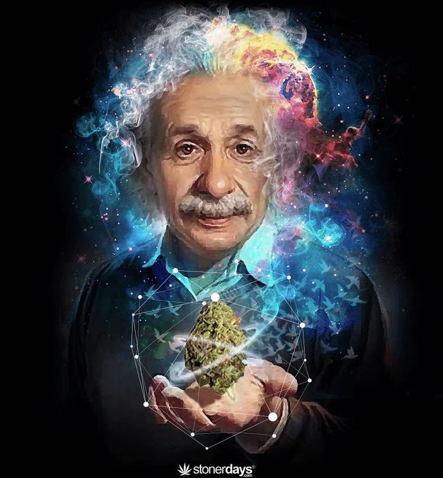
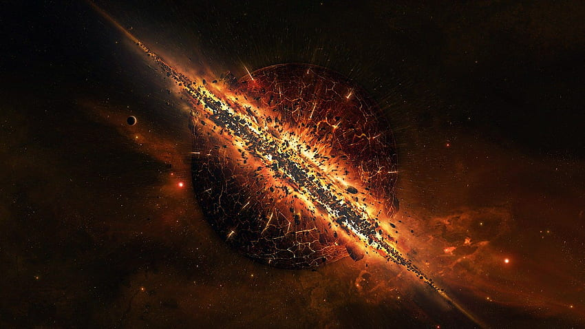
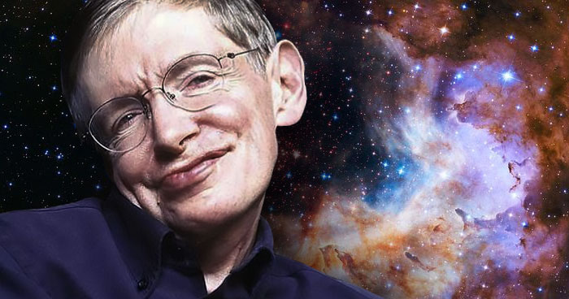

Universe
Einstein's Vision:
Albert Einstein, a trailblazer in the realms of physics, extended his groundbreaking notions of space and time to conceptualize the universe itself. In 1919, employing Ockham's Razor and embracing Platonic perfection, he crafted a model of the cosmos. This vision portrayed a static, spherical, and perfectly symmetric universe with matter uniformly dispersed.

Cosmic Tapestry:
The universe encompasses the entirety of space, time, and all its constituents. From the infinitesimally small subatomic particles to the vastness of galaxies, every form of matter and energy, along with the structures they weave, finds a place within this cosmic tapestry.
The Big Bang:
The cosmic narrative began with a colossal event known as the Big Bang, a tiny, dense fireball that exploded into existence 13.8 billion years ago. While the Big Bang theory stands as the widely accepted explanation for the universe's origin, the enigma of what triggered this cataclysmic explosion remains shrouded in mystery.

Expansion and Evolution:
Since the epochal Big Bang, the universe has been in a state of continual expansion. In its early years, everything existed in a gaseous state, predominantly composed of hydrogen and helium. Over billions of years, the force of gravity sculpted this primordial gas and dust into stars, planets, galaxies, and the celestial wonders that grace the cosmos today.
You Are Stardust:
A profound connection emerges as we realize that all matter in the cosmos, including ourselves, originated from the raw materials released during the Big Bang. In essence, each individual is a star in the making, a testament to the cosmic journey that intertwines us with the vastness of the universe.
Hawking's Dimensional Membrane:
Stephen Hawking's intellectual legacy leaves us with a captivating perspective—the universe as a four-dimensional membrane within a five-dimensional space. This final theory, elucidated in "On the Origin of Time" by Hawking's last collaborator, Thomas Hertog, unravels a hidden reality that extends far beyond our perceptible dimensions.

The Fate of Mass:
Hawking's most famous prediction, now subject to a radical revision, suggests a cosmic destiny where everything with mass might eventually vanish. A new theory challenges Hawking's 1974 concept of black holes, proposing a universal evaporation that could redefine our understanding of the enduring nature of celestial objects.
Join us on this cosmic journey as we explore the profound theories, events, and mysteries that shape the universe. Each revelation unfolds a layer of the cosmic narrative, inviting you to contemplate the wonders that surround us.